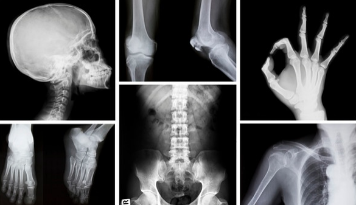

Radioaktivität ist überall

Radioaktive Strahlung ist ein natürlicher Bestandteil unserer Umwelt. Das bedeutet: Egal wo wir sind - draußen, im Haus oder sogar im Flugzeug - wir sind immer von Strahlung umgeben. Allerdings ist diese Strahlung in der Regel sehr schwach und daher ungefährlich. Man kann sich das wie einen ganz feinen, unsichtbaren Regen vorstellen, der ständig auf uns "herunterrieselt", ohne dass wir ihn bemerken.
Abb. 1 zeigt, dass die Strahlung in Deutschland nicht überall gleich stark ist. Je dunkler die Farbe, desto höher ist die natürliche Radioaktivität. Besonders in Süddeutschland sind dunklere Bereiche zu erkennen. Das liegt daran, dass dort bestimmte Gesteine vorkommen und teilweise höhere Lagen vorhanden sind. Die Karte hilft also zu verstehen, dass die Strahlung stark von der Umgebung abhängt.
Bodenstrahlung - Strahlung aus Gesteinen
Ein großer Teil der natürlichen Strahlung kommt aus dem Boden. In vielen Gesteinen befinden sich radioaktive Stoffe, zum Beispiel Uran oder Thorium. Diese Stoffe zerfallen langsam und geben dabei Strahlung ab.
Je nachdem, welche Gesteine in einer Region vorkommen, ist die Strahlung unterschiedlich stark. Besonders hoch ist die Bodenstrahlung in Gebieten mit viel Granit, wie zum Beispiel im Bayerischen Wald. Granit enthält vergleichsweise viele radioaktive Bestandteile.
Das bedeutet: Wenn du in einer solchen Region lebst oder dich dort aufhältst, bist du automatisch einer etwas höheren natürlichen Strahlung ausgesetzt. Man kann sich den Boden wie eine große Fläche vorstellen, die ganz schwach "strahlt", ähnlich wie ein Heizkörper, der nur minimal Wärme abgibt.
Höhenstrahlung - Strahlung aus dem Weltraum
Ein weiterer Teil der Strahlung kommt aus dem Weltraum. Diese sogenannte kosmische Strahlung trifft ständig auf die Erde. Unsere Atmosphäre schützt uns davor, indem sie einen großen Teil dieser Strahlung abfängt.
Allerdings gilt: Je höher man sich befindet, desto dünner wird die Atmosphäre und desto weniger Schutz bietet sie. Deshalb nimmt die Strahlenbelastung mit der Höhe zu.
Ein gutes Beispiel ist die Zugspitze. Dort ist die Strahlung deutlich stärker als im Flachland. Noch stärker ist sie im Flugzeug, weil man sich dort in großer Höhe befindet. Man kann sich die Atmosphäre wie einen Regenschirm vorstellen: Am Boden ist der Schutz stark, weiter oben wird er immer schwächer.
Eigenstrahlung - Strahlung aus dem Körper
Auch unser eigener Körper trägt zur Strahlung bei. Das klingt zunächst überraschend, ist aber ganz normal. Über unsere Nahrung, das Trinkwasser und die Atemluft nehmen wir kleine Mengen radioaktiver Stoffe auf.
Ein bekanntes Beispiel ist das Element Kalium, das in vielen Lebensmitteln enthalten ist, zum Beispiel in Bananen. Ein kleiner Teil dieses Kaliums ist radioaktiv und sendet Strahlung aus. Dadurch wird unser Körper selbst zu einer sehr schwachen Strahlungsquelle. Diese sogenannte Eigenstrahlung ist jedoch so gering, dass sie keine Gefahr darstellt.
Künstliche Radioaktivität - vom Menschen erzeugt

Abb. 2 zeigt ein Kernkraftwerk mit großen Kühltürmen. Dort wird mithilfe radioaktiver Stoffe Energie erzeugt, um Strom herzustellen. Das zeigt, dass Radioaktivität technisch genutzt werden kann.
Abb. 3 zeigt ein MRT-Gerät im Krankenhaus. Hier wird Strahlung eingesetzt, um Bilder vom Inneren des Körpers zu erzeugen. Abb. 4 zeigt ein Röntgenbild; Knochen sind sichtbar, weil sie Strahlung unterschiedlich stark durchlassen.

Neben der natürlichen Strahlung gibt es also auch künstliche Radioaktivität, die vom Menschen erzeugt wird. Diese entsteht vor allem in Kernkraftwerken oder in der Medizin. Dabei wird immer darauf geachtet, die Strahlung möglichst gering zu halten.
Die Entdeckung der Radioaktivität

Abb. 5 zeigt den Physiker Henri Becquerel, der die Radioaktivität entdeckte. Abb. 6 zeigt eine Fotoplatte mit dunklen Flecken. Diese Flecken entstanden, obwohl die Platte in Papier eingewickelt war. Das bedeutet, dass eine unsichtbare Strahlung durch das Papier gedrungen ist.

Die Radioaktivität wurde im Jahr 1896 von Henri Becquerel entdeckt - und zwar eher zufällig. Er untersuchte ein Mineral, das Uran enthält. Dieses Material leuchtete nach, wenn es vorher dem Sonnenlicht ausgesetzt war.
Dazu legte er das Uran auf eine Fotoplatte, die lichtdicht verpackt war. Als er sie später entwickelte, war sie geschwärzt. Daraus schloss er, dass das Uran eine unsichtbare Strahlung aussendet. Damit war die Radioaktivität entdeckt.

Abb. 7 zeigt Marie und Pierre Curie. Auch sie untersuchten diese Strahlung weiter und entdeckten neue radioaktive Stoffe.